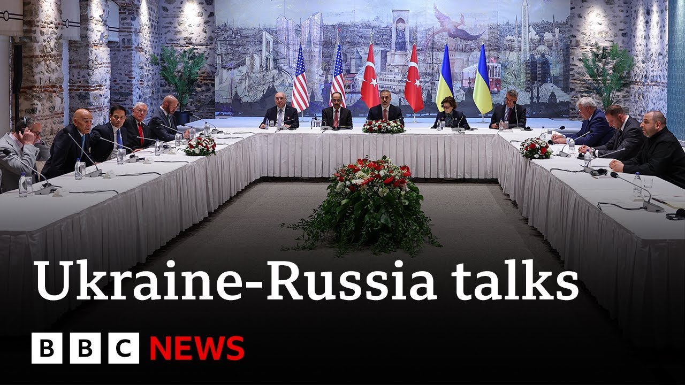

【据报道，土耳其今日将举行两场会议作为结束乌克兰战争的外交努力。首场会议将于格林尼治时间7:45（不足一小时后）开始，土耳其、美国和乌克兰官员将出席。第二场三方会议预计于格林尼治时间9:30（约两小时后）举行。据报道，乌克兰和俄罗斯代表团将在土耳其调解下会晤。】
Summary: It's being reported in Turkey that two meetings will take place today as part of diplomatic efforts to end the war in Ukraine.
摘要： 土耳其报道称，今日将举行两场会议，作为结束乌克兰战争的外交努力。

⏱️ Estimated Reading Time: 6 min
The first is due to start at 7:45 GMT, so in under an hour's time, and it will involve Turkish, US, and Ukrainian officials.
首场会议将于格林尼治时间7:45（不足一小时后）开始，土耳其、美国和乌克兰官员将出席。
A second trilateral meeting is then expected to begin at 9:30 GMT.
第二场三方会议预计于格林尼治时间9:30举行。
That's just over 2 hours from now.
距现在约两小时后。
And it's being reported that it will bring together the Ukrainian and Russian delegations with Turkey mediating.
据报道，乌克兰和俄罗斯代表团将在土耳其调解下会晤。
Well, these come after no talks between Russia and Ukraine on Thursday despite officials from both countries being in Istanbul.
此前，尽管俄乌官员周四均在伊斯坦布尔，但双方未举行会谈。
Ukraine's President Zilinski did fly to Turkey as he promised, but Russia's President Putin did not.
乌克兰总统泽连斯基如约飞抵土耳其，但俄罗斯总统普京未到场。
While the US Secretary of State Marco Rubios arrived in Istanbul, he was attending a NATO meeting on Thursday and he gave his assessment of where things currently stand.
美国国务卿马可·鲁比奥抵达伊斯坦布尔，他周四参加了北约会议并评估了当前局势。
We don't have high expectations of what will happen tomorrow.
我们对明日进展不抱过高期望。
And frankly, at this point, I think it's abundantly clear that the only way we're going to have a breakthrough here is between President Trump and and and President Putin.
坦白说，目前唯一可能的突破需特朗普总统与普京总统直接沟通。
Marco Rubio there.
马可·鲁比奥表示。
Well, as we mentioned, Vladimir Putin has not made an appearance in Turkey, but his Ukrainian counterpart is there.
如前所述，普京未现身土耳其，但其乌克兰对手泽连斯基在场。
Vladimir Zalinski confirmed Ukraine would send a delegation for these talks, but accused Russia of not treating them seriously.
泽连斯基确认乌方将派代表团参会，但指责俄方未认真对待。
And he said that his priority was an immediate end to the fighting.
他表示优先事项是立即停火。
I believe both sides must demonstrate their willingness to negotiate.
我认为双方须展现谈判意愿。
The first step should be an unconditional ceasefire.
第一步应是无条件停火。
If that can be achieved today at the level of technical groups without leaders, then okay, there is no need to meet.
若技术层面今日能达成停火（无需领导人参与），则无需会晤。
Well, a spokesperson for Russia's foreign ministry has labeled Mr. Zalinski as a clown and a loser and pathetic.
俄外交部发言人斥泽连斯基为“小丑、失败者、可悲”。
And while the diplomatic efforts are being made in Turkey, in Ukraine, however, the fighting continues with Russia claiming its forces captured two more small settlements in the Donbass region on Thursday.
土耳其外交努力进行之际，乌克兰战事持续，俄方称其部队周四在顿巴斯占领两处小定居点。
Well, BBC Monitoring's Russia editor and host of Ukraine cast, Vitali Shvchenko, is in Estanbul with the very latest.
BBC监测俄罗斯编辑兼乌克兰节目主持人维塔利·什琴科在伊斯坦布尔带来最新消息。
Hopefully, today is the day, the day when uh direct talks between Russia and Ukraine restart, talks about ending this war.
希望今日成为俄乌重启直接谈判、讨论结束战争之日。
uh as as you say Kasha, hopes are running pretty low.
如你所说，卡莎，希望相当渺茫。
They're not getting any higher, but at least they'll be in the same room for the same for the first time in in three years.
希望未增，但至少是三年来首次同处一室。
The the Russian delegation spent the whole of yesterday waiting for the Ukrainians here in Istanbul.
俄代表团昨日整日在伊斯坦布尔等待乌方。
Uh it's a low-level delegation led by presidential adviser Vladimir Midenski and Voldemir Zalinski of Ukraine spent a lot of time thinking does he send anyone to meet such a low key figure and he's dispatched his defense minister Rosmev who's coming to Istanbul later today.
俄方由总统顾问弗拉基米尔·米坚斯基率低级别代表团，泽连斯基长时间考虑是否派人会见此低调人物，最终派防长罗斯梅夫今日晚些时候赴伊斯坦布尔。
I'll give an example of how different the Russian and Ukrainian positions are.
举例说明俄乌立场差异。
While Voldemir Zalinski says that his team's mandate is focused on ceasing fire immediately, the Russians uh they've been saying throughout yesterday that they're focused on um long-term peace and removing the root causes of what they call this crisis.
泽连斯基称其团队任务是立即停火，而俄方昨日一直强调关注长期和平及消除其所谓“危机根源”。
And translated from Kremlin speak, this is basically it means that no, they're not really interested in in ceasing fire.
用克里姆林宫的话说，即他们对停火并无兴趣。
Uh what they're interested in uh addressing what started this war in Kremlin's point of view and that means the very existence of Ukraine as a sovereign state that can make decisions of its own.
他们关注的是克里姆林宫眼中战争起因——即乌克兰作为可自主决策的主权国家的存在。
The presence of Marubia here in Istanbul, it adds weight to what's going on what's going on even though he is not expecting much.
鲁比奥现身伊斯坦布尔为局势增添分量，尽管他预期不高。
Also interestingly uh the head of the Russian delegation Vladimir Majinski he said yesterday that Russia was prepared to discuss compromises.
有趣的是，俄代表团团长弗拉基米尔·马金斯基昨日称俄方愿讨论妥协。
What that means exactly is not clear but hopefully hopefully it's a step forward and a sign of a little flexibility on Russia's part.
具体含义不明，但希望这是俄方稍显灵活性的进步迹象。
So when when you talk about these compromises that the Russian side are potentially prepared to discuss, we're not clear on what they will be.
俄方可能讨论的妥协内容尚不明确。
But if they are still focused on the root causes of this war and as your point very much uh Vitali saying that that has always been the very existence of Ukraine.
但若其仍聚焦战争根源——如你所言，维塔利，即乌克兰的存在本身。
I where could possibly these potential compromises be?
妥协可能何在？
We don't know as simple as that.
我们一无所知。
Vladimirki is the only person who me from the Russian delegation from Russia who mentioned the word compromises.
弗拉基米尔·基是俄代表团唯一提及“妥协”者。
Everybody else uh was still saying uh no uh fresh weapons uh supplies to Ukraine, no more new fighters for the Ukrainian army, no NATO membership.
其他人仍坚持不向乌提供新武器、不增援乌军、反对北约成员资格。
We want we Russia want at least five uh Ukrainian regions which Russia partly or fully occupies.
俄方要求至少五个其部分或完全占领的乌地区。
All that of course is completely unacceptable for Vimir Zalinski.
这一切对泽连斯基当然完全不可接受。
But he's saying first step ceasefire.
但他表示第一步是停火。